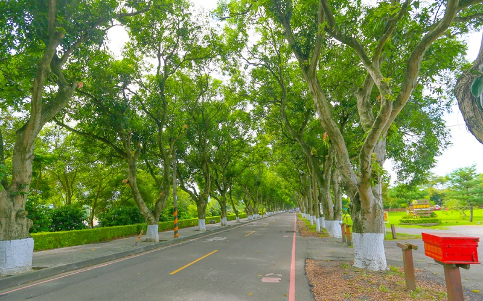
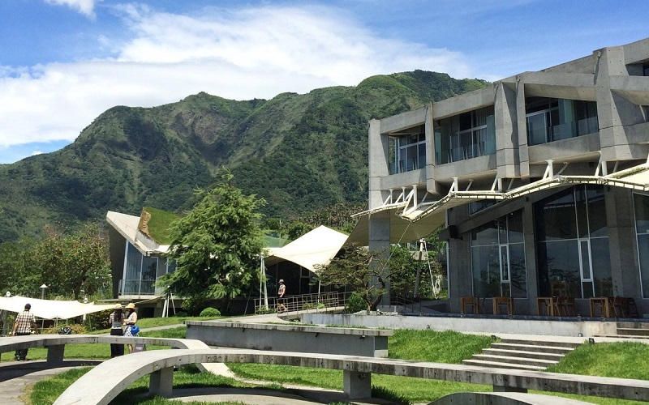
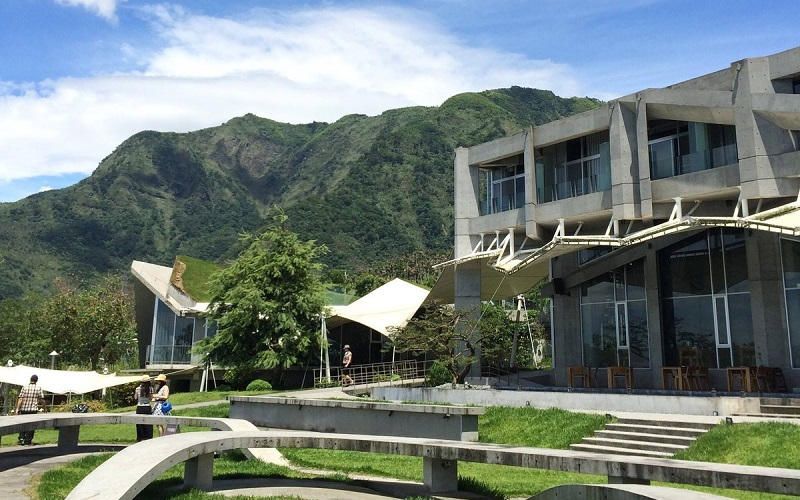

Gukeng green tunnel
Yunlin County
Gukeng green tunnel
 


Chijin used to be a sand bar which is connected with the southern tip of Kaohsiung, but in 1967,this link was severed to
create a second entry point to the Port of Kaohsiung. Being an island, Chijin is not only known for beaches and seafoods
but also with abundant history. Chinjin Mazu Temple is the first Mazu Temple in Kaohsiung, which indicates the belif in
Mazu in this area. The Rainbow Chruch, built in recent years, becomes a new tourist spot in Chijin, especially for those
who come for shooting wedding pictures.
- Best seasons: all year around
- Transportation:
The "Cross Harbor Tunnel" (Chinese: 過港隧道) connects Cijin Island and the rest of Kaohsiung on mainland Taiwan.
Cijin District is also accessible by two ferry piers, the Cijin Ferry Pier at the northern tip of the island and
the Zhongzhou Ferry Pier at the middle of the island.